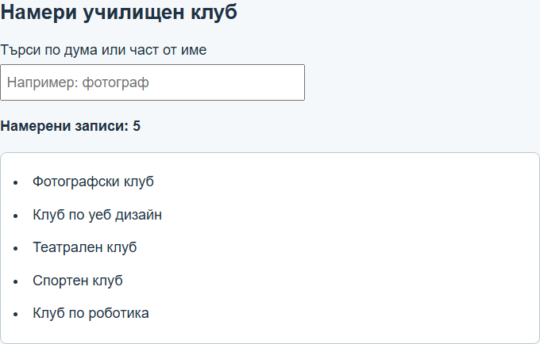
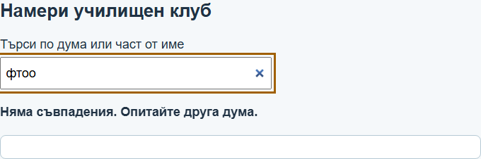

За какво е този урок?
Ще филтрирате налични записи при писане, ще скривате несъвпадащите елементи и ще показвате актуален брой резултати. Поредицата свързва HTML структура, CSS оформление и JavaScript поведение.
Четете обясненията, изпробвайте действията и запазвайте работата си. Отворените въпроси показват примерен отговор след предаване. При собствена тема са възможни различни обосновани решения.
Събитие, състояние и видим резултат
Как работи задачата
Посетителят въвежда дума или част от име. След всяка промяна JavaScript обхожда записите и проверява дали текстът им съдържа търсеното. Подходящите остават видими, останалите се скриват.
querySelectorAll("#clubs li")избира всички елементи li в списъка с id="clubs".for...ofизпълнява един и същ блок за всеки избран елемент.textContentпрочита текста на конкретния запис.trim()премахва крайните интервали в заявката.toLocaleLowerCase("bg-BG")преобразува текста до малки букви, така че регистърът да не пречи на сравнението.includes(query)проверява дали текстът съдържа заявката като последователност от знаци.
Броячът visibleCount започва от 0 при всяка проверка. Използваме let, защото променяме стойността му. При съвпадение добавяме 1. След обхождането показваме броя или съобщение за липса на резултат.
Празният текст се съдържа във всеки запис, затова изчистването на полето показва целия списък. Това е филтър върху наличните записи в страницата; не търси в целия интернет.
Този урок е част от поредицата „Интерактивна уеб страница с JavaScript“: показване на подробности → смяна на тема → изчисления → проверка на форма → филтриране на списък. Общата ситуация е страница за училищни клубове: посетителят разглежда подробности, избира тема, изчислява учебна такса, проверява данни за участие и намира клуб. Всяка задача има собствен работещ пример и може да се изпълни самостоятелно. Общият подход е: избираме елементи, обработваме събитие, проверяваме състоянието и обновяваме видимия резултат.
Една и съща проверка за всеки запис
querySelectorAll връща статичен списък: това са елементите, намерени в момента на извикване. Добавяйте новите клубове в HTML преди зареждането и презаредете файла. Записи, добавени по-късно чрез друга програма, не се включват автоматично в вече запазения списък.
const използваме за имена, на които не присвояваме нова стойност; let visibleCount е брояч, който променяме. За всяко input събитие започваме от нула. В цикъла for...of item последователно е всеки запис; matches е true или false за него.
Търсенето е по непрекъсната последователност от знаци, без разграничаване на главни и малки букви. То не поправя правописни грешки и не премахва всички разлики между знаците. Например „фото“ съвпада с „Фотографски клуб“, а „фтоо“ — не. Изчистването връща всички записи, защото "текст".includes("") е true.


Работещ пример и подготовка
Работещ пример
Отворете работещия пример или изтеглете HTML файла.
Подгответе работния файл
- Изтеглете пълния работещ HTML пример. Запазете го като
27-javascript.htmlв своя папка. - Отворете един и същ файл в текстов редактор и в браузър. Записвайте с UTF-8 и разширение .html; след промяна запазвайте и презареждайте.
- В готовия файл CSS е между style таговете в head, HTML съдържанието е в body, а JavaScript е след елементите, преди затварящия body. Така те вече съществуват, когато ги избираме.
- За работа в CodePen отворете нов Pen и поставете отделните откъси от урока в HTML, CSS и JS. В JS не поставяйте script тагове. При предаване запазете резултата като пълен самостоятелен HTML файл; най-прекият начин е да пренесете промените в изтегления пример.
Ако действието не работи, отворете инструментите за разработчици с F12 или менюто на браузъра и изберете Console. Започнете от първата грешка: проверете точните id, имената на променливите, кавичките, скобите и мястото на script. След поправка запазете, презаредете и повторете действието. Неправилен id може да даде null, а повторно обявено const със същото име — грешка.
HTML елементи и CSS оформление
HTML — елементите
<h1>Намери училищен клуб</h1>
<label for="search">Търси по дума или част от име</label>
<input id="search" type="search" aria-controls="clubs" aria-describedby="results" placeholder="Например: фотограф">
<p id="results" role="status"></p>
<ul id="clubs" class="card">
<li>Фотографски клуб</li>
<li>Клуб по уеб дизайн</li>
<li>Театрален клуб</li>
<li>Спортен клуб</li>
<li>Клуб по роботика</li>
</ul>CSS — оформлението
* { box-sizing: border-box; }
body { margin: 0; padding: 20px; font: 18px/1.6 Arial, sans-serif; color: #203244; background: #f5f8fa; }
.demo { max-width: 680px; margin: auto; }
h1 { font-size: 1.6rem; line-height: 1.25; }
button { font: inherit; padding: .6rem 1rem; color: white; background: #254e70; border: 0; border-radius: 6px; cursor: pointer; }
button:focus-visible, input:focus-visible { outline: 3px solid #a06000; outline-offset: 3px; }
input { display: block; width: 100%; max-width: 24rem; font: inherit; padding: .4rem; margin: .2rem 0 1rem; }
.card { background: white; border: 1px solid #b5c9d4; border-radius: 8px; padding: 1rem; margin: 1rem 0; }
[hidden] { display: none !important; }
#clubs { list-style-position: inside; }
#clubs li { padding: .4rem 0; }
#results { font-weight: bold; }Проследете JavaScript кода
JavaScript — поведението
const searchInput = document.querySelector("#search");
const items = document.querySelectorAll("#clubs li");
const results = document.querySelector("#results");
function filterList() {
const query = searchInput.value.trim().toLocaleLowerCase("bg-BG");
let visibleCount = 0;
for (const item of items) {
const text = item.textContent.toLocaleLowerCase("bg-BG");
const matches = text.includes(query);
item.hidden = !matches;
if (matches) {
visibleCount = visibleCount + 1;
}
}
if (visibleCount === 0) {
results.textContent = "Няма съвпадения. Опитайте друга дума.";
} else {
results.textContent = "Намерени записи: " + visibleCount;
}
}
searchInput.addEventListener("input", filterList);
filterList();Самостоятелна работа и проверки
Самостоятелна работа
- Използвайте работния HTML файл или CodePen и проверете първоначалните пет записа.
- Потърсете „фотограф“, „КЛУБ“ и несъществуваща дума.
- Добавете още два клуба в HTML и проверете новия общ брой след обновяване.
- Заменете клубовете с подходящ списък от вашия сайт: събития, теми или категории.
- Проверете изчистване, поставяне на текст и работа с клавиатура. Уверете се, че списъкът се възстановява.
Резултат: ваш работещ вариант и кратка бележка какво сте променили и проверили.
Проверете резултата
| Проверка | Очакван резултат |
|---|---|
| Празно поле | Всички 5 записа са видими. |
| фотограф | Вижда се само „Фотографски клуб“. |
| КЛУБ | Виждат се всичките 5 записа независимо от големите букви. |
| роботика | Вижда се само клубът по роботика; крайните интервали не пречат. |
| несъществуваща | Списъкът няма видими записи и има ясно съобщение. |
| Изчистване след липса на резултат | Всички записи отново се показват. |
Прочетете още
MDN — includes; за показване и скриване използвайте и урок 23.
Разширете филтъра до седем записа
- Запазете пълния пример като
27-javascript.html. Проверете първоначалните пет клуба. - В HTML, преди зареждане, добавете още два li: „Музикален клуб“ и „Клуб по астрономия“. Запазете и презаредете. При празно поле трябва да виждате седем записа и брой 7.
- За да използвате собствена тема, заменете заглавието и краткото пояснение със свои думи, но оставете седемте имена на клубове за следващите проверими опити. След предаването можете да приложите филтъра към други категории.
- Проверете „фотограф“ → 1; „КЛУБ“ → 7; „ роботика “ → 1; „музикален“ → 1; „несъществуваща“ → 0 и ясно съобщение. След изчистване трябва отново да са 7.
- Поставете текст чрез копиране и поставяне, изтрийте го с клавиатура и проверете резултата. Броячът трябва да започва от нула при всяка промяна, а несъвпадащите li да остават в DOM с hidden.
- Запазете и отворете файла повторно. В края добавете видима бележка с две ваши заявки и наблюдаваните бройки. Проверете Console.
Общото в петте задачи от поредицата е обработване на събитие и обновяване на интерфейса. Тук цикълът повтаря проверката за няколко елемента, вместо да работи само с един.
Самопроверка
Главни букви и крайни интервали
Trim премахва крайните интервали от заявката, а toLocaleLowerCase("bg-BG") преобразува и двете сравнявани стойности до малки букви. Includes намира последователността „роботика“ в текста. Само преобразуване на едната страна не е достатъчно.
Броят расте при всяко писане
Всяко input събитие добавя към стария брой. Поставете let visibleCount=0 вътре в началото на filterList, преди цикъла. След обхождането показвайте резултата от текущата заявка.
Скриване или изтриване?
Несъвпадащите записи са скрити чрез hidden, не изтрити. Празната заявка се съдържа във всеки текст, така че всички matches са true, hidden става false и броячът е 7.
Какво да запомним?
- Input реагира при промяна на полето.
- QuerySelectorAll избира статичен списък от елементи.
- For...of прилага проверката към всеки запис.
- Сравняваме текстовете по еднакъв начин и обновяваме броя.
- Hidden запазва записите, за да ги покажем отново.